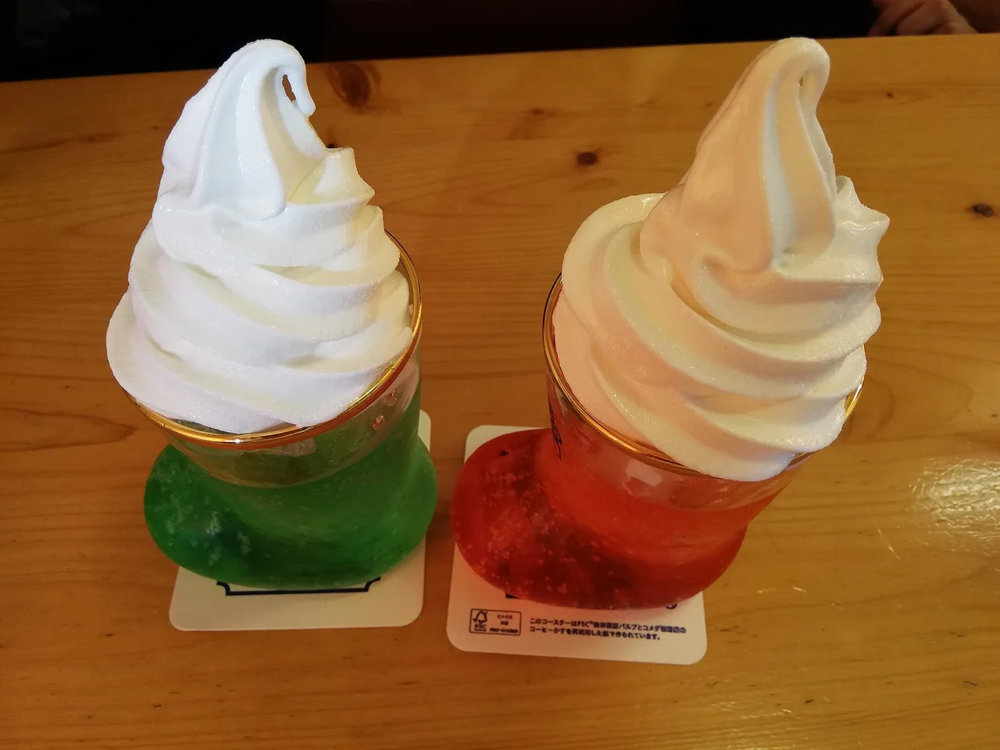
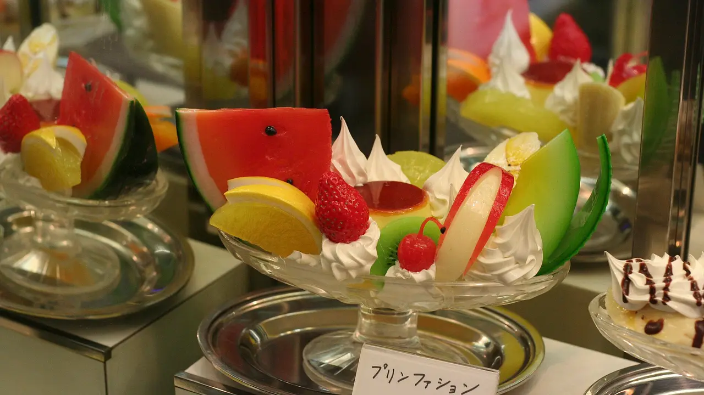

Kissaten: Inside Japan's Showa-Era Cafés (and Why Gen Z Loves Them)
You have probably scrolled past one without knowing its name: a narrow café behind a hand-painted sign, a glass of green cream soda with a cherry on top, an old man in a vest pouring coffee through a glass siphon. That is a kissaten, and the older, coffee-first kind is called a jun-kissa. We have spent a lot of slow afternoons in them with our kid, and this is the part of Japan we point first-time visitors toward. Here is what they are, what to order, where to find them, and why people half our age are queuing outside.

The first time our daughter pressed her nose to a kissaten window, what stopped her was the cream soda: a glass of melon-green soda, a scoop of vanilla ice cream slumping into the foam, one red cherry on a stick. We went in for the soda and stayed for the low velvet booths you sink into. That is the appeal in one sentence: a kissaten is a room where nobody is rushing you out.
Quick answers
Q. What is a kissaten?
A. A kissaten (喫茶店) is a traditional Japanese café, usually a small owner-run place with a Showa-era feel of wood, velvet seats, soft jazz, and coffee brewed slowly. A jun-kissa (純喫茶, "pure kissaten") is the strictest, coffee-and-light-food kind; the name is usually explained as the café staying clear of alcohol and night-trade licensing. Many opened between the 1950s and 1980s, and a lot of them have barely changed since.
Q. What do you order at a kissaten?
A. The classics are cream soda (a glowing melon soda float), Napolitan (ketchup spaghetti), pudding à la mode, thick-cut buttered toast, and a hand-poured coffee. In the morning you order a "morning set" (モーニング), which adds toast and an egg to your coffee for almost no extra cost.
Q. Where do you find kissaten?
A. Old shopping streets, the back lanes near big train stations, and basements and second floors you would otherwise walk past. Nagoya, Osaka, and the older neighbourhoods of Tokyo (Asakusa, Jinbocho, Koenji) are the easiest places to find the real thing. Look for a faded sign reading 喫茶 or 珈琲.
Q. How is a kissaten different from a normal café?
A. A chain café is built for speed and takeaway cups; a kissaten is built for sitting and staying a while. Service is unhurried, the room is built for staying, and the menu is fixed and old rather than seasonal. You are paying, in part, for permission to sit for two hours over one coffee.
What a kissaten actually is
The word kissaten (喫茶店) breaks down to "drink-tea shop," but coffee is the heart of it. The cafés people are chasing online are mostly jun-kissa (純喫茶), the "pure" version that focused on coffee and light food; the name is usually explained as the café staying clear of alcohol and the late-night cabaret business. That austerity is why they feel so calm: the whole room was designed for sitting and drinking coffee, and little else.
Most of these rooms were built during the Showa era, which ran from 1926 to 1989. The ones that survive tend to date from the postwar decades, when a coffee shop was where you read the newspaper, met a date, or escaped a cramped apartment for an hour. The fittings froze in that period and stayed: dark wood panelling, deep velour booths in maroon or moss green, frosted-glass lamps, a wall of coffee cups, and a record or a low radio playing jazz you half recognise. The master (マスター) stands behind a polished counter and brews each cup by hand, often with a siphon, a two-chamber glass contraption with a flame under it that pulls the coffee up, then lets it fall back clear and dark. Watching it is part of the order.
The texture is in the small things. The water comes in a heavy glass with a paper coaster. The coffee arrives on a saucer with a tiny metal jug of milk and a sugar pot you serve yourself. Nobody asks for your name, nobody rushes the table, and the bill sits face-down until you are ready. We have read whole afternoons away in places like this while our daughter worked through a pudding the size of her fist.
The menu: cream soda, Napolitan, pudding à la mode

A jun-kissa menu is short and almost identical from city to city, which is half the comfort of it. You already know what you want before you sit down.
If you only have room for one thing, get the cream soda and a coffee, and split a Napolitan. The cream soda is what everyone photographs, but the coffee is the reason the place exists, and the Napolitan is a taste most visitors never get to try.
Why Gen Z fills them now
The strange thing is who is sitting in these booths in 2026. For years the regulars were retirees, and people assumed the kissaten would quietly close out with its owners. Instead, young Japanese in their teens and twenties have adopted them, and so have visitors who found them through a phone screen. The cream-soda photo travels well, and a café that has looked the same since 1972 photographs like a film set.
Under the aesthetic there is a real reason, and we think it is the honest one. These are people who grew up entirely online, and a room with no Wi-Fi pressure, no app, and no one filming a reel feels like a break. You order, you wait, you watch the siphon, you talk. The slowness that once made the kissaten seem outdated is now the product. Japanese press has reported on this Showa/Heisei-retro revival among young people, a nostalgia for eras a person often never lived through at all, and you can feel it in the kissaten queues on a Sunday.
It helps that the offer is generous. A cream soda and a window seat for the price of one drink, in the middle of an expensive city, is a genuinely good afternoon. If you want the wider picture of what days like this cost, our family guides to Osaka and Tokyo put the café stops in context.
Coffee by region: Nagoya, Osaka, Tokyo
Japan's coffee habit is not even across the country, and the kissaten map reflects that.
Nagoya is the one to know. The city runs on a morning-service (モーニング) culture so strong it borders on civic identity: order a coffee before late morning and you are handed toast, a boiled egg, and sometimes a small salad or red-bean paste, at little or no extra charge. Komeda's Coffee (コメダ珈琲店), founded in Nagoya, spread the Nagoya café-comfort style nationwide, and now feels like a kissaten with the comfort dialled up: deep wooden booths, a brick-shaped slab of shironoir, bottomless mornings. If you want to understand Aichi prefecture through a coffee cup, that is the door. Our Aichi guide goes into the wider region around it.
Osaka does kissaten the Osaka way: louder, friendlier, and unembarrassed about it. The old shopping arcades and the lanes around Shinsekai and the Showa-flavoured streets hide places where the master will talk to you and the portions lean generous. Mixed-juice (ミックスジュース), a blended fruit-and-milk drink, is an Osaka kissaten staple you will not see as often elsewhere.
Tokyo hides its best kissaten in the old town. The lanes of Asakusa, the secondhand-bookshop district of Jinbocho, and the scruffier corners of Koenji and Shinjuku's Golden-Gai fringe still hold rooms that opened generations ago. The capital also has the famous coffee-obsessed jun-kissa where a single cup is brewed with ceremony and priced to match, and it is worth doing once for the theatre of it.
FINDING A REAL ONE, NOT A RETRO COSTUME
New cafés now copy the Showa look on purpose, which is fine but not the same thing. The genuine articles usually have a worn hand-painted sign, a master who has clearly been there for decades, a cash-only register, and a menu that has not changed in years. If a place has a slick website and ten kinds of oat-milk latte, it is a retro-styled café, not a kissaten. Both are pleasant; only one is the original.
The slow hand-poured cup is the heart of the kissaten, and the tools are the same ones the masters use: Kalita has been behind kissaten counters since the Shōwa era, and Hario's ceramic V60 is the modern classic for the same ritual at home.
The "Check price" links are affiliate links (Amazon). We may earn a small commission at no extra cost to you, and it never changes what we recommend. As an Amazon Associate, NihongoHub earns from qualifying purchases.
How to order, and the small etiquette
Kissaten etiquette is gentle and mostly common sense, but a few habits make you read as a welcome guest rather than a tourist.
Seating is usually self-service: you walk in, wait a beat to see if the master waves you to a spot, and otherwise sit where you like. If you are unsure, it is polite to ask. A coffee buys you the table for as long as you want it, so there is no need to rush or to keep ordering. Many of the oldest places are cash only, so carry a few coins and notes. If you are still deciding how much yen to keep on you, our cash-or-card guide for 2026 covers it. Quiet voices, no loud calls, and a small "gochisōsama" on the way out all land well. And when you do photograph that cream soda, a quick glance to check no other customer is in frame is the courteous move.
One more tip for travellers who treat the konbini as their other café: the two scenes pair surprisingly well. A morning kissaten coffee and an afternoon convenience-store run are how a lot of our days in Japan actually look, and there is more on that in our konbini guide.
Some links above are affiliate links. We may earn a commission at no extra cost to you. We only list services we'd use ourselves.
You do not need a guide to find a kissaten — half the joy is pushing open a door you were not sure was open. But a guided food walk is a fast way to learn which back streets hold the good ones, and to hear the stories behind a counter you would otherwise just sit at.
The Japan Times — reporting on the Showa/Heisei retro revival
NihongoHub — Aichi guide · Nagoya morning-service and Komeda coffee culture
NihongoHub — Osaka guide · arcade kissaten and mixed-juice country
NihongoHub — Tokyo guide · old-town jun-kissa in Asakusa, Jinbocho and Koenji
NihongoHub — Explore Japan by prefecture · pick a region and find its cafés
Café descriptions here are from our own visits; we cite the press only for the wider trend. Opening hours and individual shops change, so check before you go.
If what you liked about kissaten was one drink made slowly and properly, matcha is the version you can practise at home. Our matcha and tea ceremony set comparison → covers bamboo versus electric, and what each set leaves out.